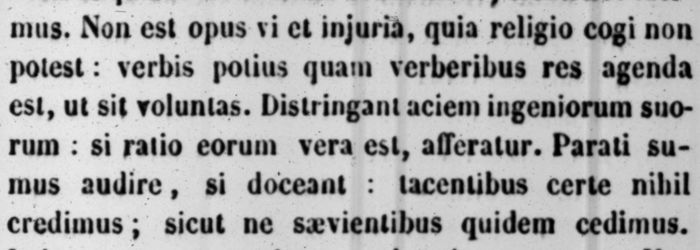
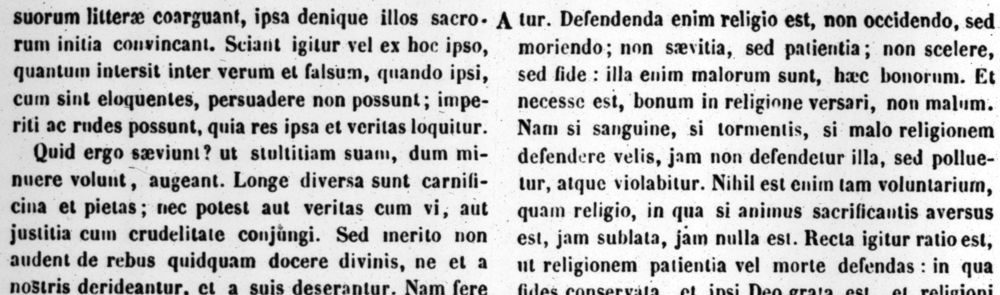

“Religio cogi non potest” (V.20, cols. 613–614)
Latin: Migne, PL 6, cols. 613–614, scan n308. Highlighted: the sentences that make Lecky’s point.

… There is no need of force and injury, because religion cannot be compelled: the matter must be carried on by words rather than by blows, so that the will may be free. Let them draw the sword of their wits: if their reasoning is true, let it be brought forward. We are ready to listen, if they teach; we certainly believe nothing from those who are silent, just as we do not yield to those who rage.
Translation: this edition’s draft.
Original Latin
… Non est opus vi et injuria, quia religio cogi non potest: verbis potius quam verberibus res agenda est, ut sit voluntas. Distringant aciem ingeniorum suorum: si ratio eorum vera est, afferatur. Parati sumus audire, si doceant: tacentibus certe nihil credimus; sicut ne sævientibus quidem cedimus.
“Non occidendo, sed moriendo” (V.20, cols. 615–616)
Latin: Migne, PL 6, cols. 615–616, scan n309. The picture shows the foot of the left column (“Longe diversa sunt carnificina et pietas”) beside the head of the right.

Why then do they rage? To increase their folly while they try to lessen it. Butchery and piety are far apart; neither can truth be joined with force, nor justice with cruelty. …
… For religion is to be defended, not by killing, but by dying; not by cruelty, but by patience; not by crime, but by faith: the first belong to the wicked, the second to the good, and in religion there must be good, not evil. For if you wish to defend religion by bloodshed, by torture, by evil, it will not be defended but polluted and profaned. For nothing is so voluntary as religion: if the mind of the worshipper is turned away from it, it is already taken away, it is nothing.
Translation: this edition’s draft.
Original Latin
Quid ergo sæviunt? ut stultitiam suam, dum minuere volunt, augeant. Longe diversa sunt carnificina et pietas; nec potest aut veritas cum vi, aut justitia cum crudelitate conjungi. …
… Defendenda enim religio est, non occidendo, sed moriendo; non sævitia, sed patientia; non scelere, sed fide: illa enim malorum sunt, hæc bonorum. Et necesse est, bonum in religione versari, non malum. Nam si sanguine, si tormentis, si malo religionem defendere velis, jam non defendetur illa, sed polluetur, atque violabitur. Nihil est enim tam voluntarium, quam religio, in qua si animus sacrificantis aversus est, jam sublata, jam nulla est.
Lecky’s note (vol. II, ch. IV, note 11) adds that the Institutions “were mainly written, or at least published, at Treves during the reign of Constantine”, so that this is a Christian voice for toleration from inside the new Christian empire, not only from the persecuted Church.
Further down the rabbit hole
Sources that Lecky cites in the notes next to the ones that cite this page.
- Milman, The History of ChristianityDid Constantine ban the pagan sacrifices? A dean weighs Eusebius against Constantine
- Palmer, A Treatise on the Church of Christ“Whosoever is separated from the Catholic Church … will not have life”
- Simancas, De Catholicis InstitutionibusAn inquisitor’s handbook: no faith with heretics, and torture
- Paramo, De origine et progressu officii sanctae inquisitionisWhy the dead are tried for heresy
- Socrates, Ecclesiastical HistoryThe monk who would not undress to cross a river, and the eighty priests burnt at sea
- Bédarride, Les Juifs en France, en Italie et en EspagneWhen Christianity came to power, the Jews’ persecution began, and a Pope wrote that God does not rejoice in bloodshed


Backlinks
Every place in Rationalism in Europe that links to this page (generated automatically when the site is built).
- Chapter IV, Part II: note 11